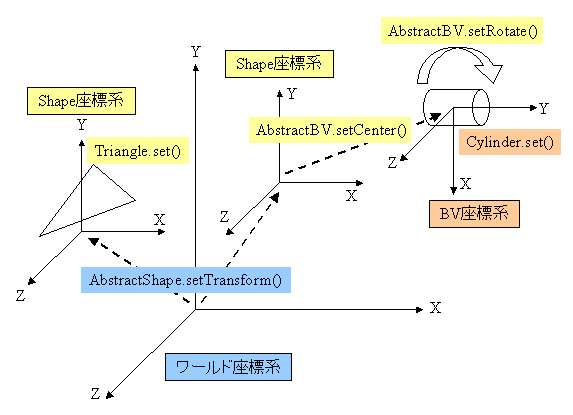

|
||||||||||
| 前のクラス 次のクラス | フレームあり フレームなし | |||||||||
| 概要: 入れ子 | フィールド | コンストラクタ | メソッド | 詳細: フィールド | コンストラクタ | メソッド | |||||||||
形状を表わすインターフェースです。
すべての形状の基底となるインターフェースです。
1. 形状関連のインターフェース構成について
形状関連のインターフェース関係は次のようになっています。(左側のインターフェースを継承)
Shape−BoundingVolume−AxisAlignedBV
2. 形状関連のクラス構成について
Shapeインターフェース、BoundingVolumeインターフェースには、次のようにそれぞれを実現した抽象クラスがあり、これらの継承クラスは
次のようになっています。
AbstractShape抽象クラス−Shapeインターフェースを実現
AbstractBV抽象クラス−BoundingVolumeインターフェースを実現AbstractShape抽象クラスの継承もしています)
AxisAlignedBVインターフェースには抽象クラスとして実現しているものはなく、次のクラスが直接実現
しています。
AABBoxクラス (Boxクラスの継承もしています)
AABCapsuleクラス (Capsuleクラスの継承もしています)
AABCylinderクラス (Cylinderクラスの継承もしています)
3. 座標系について
すべての座標系を並べると、次のようになります。(左側が親座標系)
ワールド座標系−(BVFigure座標系)−(ボーン座標系)−Shape座標系−BV座標系
このうち、( )内の座標系は、BVFigureに形状を設定する場合に関係する座標系です。
BV座標系は、BoundingVolume(Box、Capsule、Cylinder、Sphere、
AABBox、AABCapsule、AABCylinder)の場合に関係する座標系です。
したがって、形状の使い方により、関係する座標系は次のようになります。
BoundingVolumeとしてBVFigureにセットする
BVFigureのボーンに対するBoundingVolumeとしてBVFigureにセットする
4. 一次変換行列について
3.における座標系間の変換に関する一次変換行列は、次のメソッドを使って設定します。
AbstractShapeクラスのsetTransformメソッド
AbstractBVクラスのsetRotateメソッド
AbstractBVクラスのsetCenterメソッド
BVFigureクラスのsetTransformメソッド

| フィールドの概要 | |
static int |
TRANS_BV_SHAPE
BV座標系からShape座標系への一次変換行列(BoundingVolume.getRotateメソッド、 BoundingVolume.getCenterメソッドの結果を行列として１つにしたもの)を表わします(=4)。 |
static int |
TRANS_BV_WORLD
BV座標系からワールド座標系への一次変換行列(スケールあり)を表わします(=5)。 |
static int |
TRANS_BV_WORLD_NOSCALE
BV座標系からワールド座標系への一次変換行列(スケールなし)を表わします(=6)。 |
static int |
TRANS_SHAPE_WORLD
Shape座標系からワールド座標系への一次変換行列(スケールあり)を表わします(=1)。 |
static int |
TRANS_SHAPE_WORLD_NOSCALE
Shape座標系からワールド座標系への一次変換行列(スケールなし)を表わします(=2)。 |
static int |
TYPE_AAB_BOX
AABBoxを表わすタイプです(=10)。 |
static int |
TYPE_AAB_CAPSULE
AABCapsuleを表わすタイプです(=12)。 |
static int |
TYPE_AAB_CYLINDER
AABCylinderを表わすタイプです(=11)。 |
static int |
TYPE_BOX
Boxを表わすタイプです(=7)。 |
static int |
TYPE_CAPSULE
Capsuleを表わすタイプです(=9)。 |
static int |
TYPE_CYLINDER
Cylinderを表わすタイプです(=8)。 |
static int |
TYPE_LINE
Lineを表わすタイプです(=2)。 |
static int |
TYPE_PLANE
Planeを表わすタイプです(=5)。 |
static int |
TYPE_POINT
Pointを表わすタイプです(=1)。 |
static int |
TYPE_RAY
Rayを表わすタイプです(=3)。 |
static int |
TYPE_SPHERE
Sphereを表わすタイプです(=6)。 |
static int |
TYPE_TRIANGLE
Triangleを表わすタイプです(=4)。 |
| メソッドの概要 | |
void |
createMesh(int rgb,
int mode,
float v)
テスト描画用の Primitiveオブジェクトを生成します。 |
void |
deleteMesh()
createMeshメソッドで生成したテスト描画用のPrimitiveオブジェクトを削除します。
|
Object |
getAttribute()
形状に付加している属性オブジェクトを取得します。 |
Primitive |
getMesh()
テスト描画用の Primitiveオブジェクトを取得します。 |
Transform |
getMeshTransform(Transform meshTrans)
テスト描画用の一次変換行列を取得します。 |
float |
getScale()
Shape座標系からワールド座標系への一次変換行列におけるスケール成分を取得します。 |
int |
getShapeType()
形状タイプを取得します。 |
Transform |
getTransform(int transType,
Transform trans)
指定した座標系間の一次変換行列を取得します。 |
void |
setAttribute(Object attribute)
形状に属性オブジェクトを付加します。 |
void |
setTransform(Transform trans)
ワールド座標系に対してShape座標系をセットする際の一次変換行列を設定します。 |
| フィールドの詳細 |
public static final int TYPE_POINT
public static final int TYPE_LINE
public static final int TYPE_RAY
public static final int TYPE_TRIANGLE
public static final int TYPE_PLANE
public static final int TYPE_SPHERE
public static final int TYPE_BOX
public static final int TYPE_CYLINDER
public static final int TYPE_CAPSULE
public static final int TYPE_AAB_BOX
public static final int TYPE_AAB_CYLINDER
public static final int TYPE_AAB_CAPSULE
public static final int TRANS_SHAPE_WORLD
public static final int TRANS_SHAPE_WORLD_NOSCALE
public static final int TRANS_BV_SHAPE
public static final int TRANS_BV_WORLD
public static final int TRANS_BV_WORLD_NOSCALE
| メソッドの詳細 |
public int getShapeType()
形状タイプを取得します。
TYPE_POINT,
TYPE_LINE,
TYPE_RAY,
TYPE_TRIANGLE,
TYPE_PLANE,
TYPE_SPHERE,
TYPE_BOX,
TYPE_CYLINDER,
TYPE_CAPSULE,
TYPE_AAB_BOX,
TYPE_AAB_CYLINDER,
TYPE_AAB_CAPSULE
public void createMesh(int rgb,
int mode,
float v)
テスト描画用のPrimitiveオブジェクトを生成します。
開発時の図形位置の確認用としての利用を前提としたメソッドです。
描画の方法は、getMeshメソッドでPrimitiveオブジェクトを取得し、getMeshTransformメソッドで
一次変換行列を取得して、これらをGraphics3DのrenderObject3Dメソッドの引数に渡して描画します。
生成したPrimitiveオブジェクトは、形状クラスで保持されます。
setメソッドで形状を変更した場合は、createMeshメソッドでPrimitiveオブジェクトを
再生成してください。それ以外の場合は再生成する必要はありませんが、描画ごとに
getMeshメソッドでPrimitiveオブジェクトを取得して使用するようにしてください。
(AABVでは、ワールド座標軸に平行になるようにPrimitiveオブジェクトの頂点データが変更
されます)
不要になった場合はdeleteMeshメソッドで削除してください。
色、ブレンドモード、透明度の設定に関する制限に関しては、Primitiveクラスを参照してください。
ブレンドモードにDrawableObject3D.BLEND_ALPHA、透明度に50%のような値を使用すると、
図形位置の確認がしやすくなります。
※ 図形サイズ・位置に関する注意事項
生成される頂点座標は、本パッケージの内部処理で使用しているfloat型から、Primitiveの
頂点座標で使われているshort型の範囲(-32768以上かつ32767 以下)にマッピングされるため、
範囲に収まらないサイズ・位置の場合、正常に描画されないことがあります。
また、Ray、Planeは、描画上は有限の大きさとなり、端が存在します。
rgb - 0x00rrggbbの形式で、Primitiveオブジェクトの色を指定します。上位8ビットは無視されます。mode - ブレンドモードを指定します。DrawableObject3D.BLEND_NORMAL、DrawableObject3D.BLEND_ALPHA、DrawableObject3D.BLEND_ADDのいずれかを指定します。v - 透明度をパーセントで指定します。100の時が不透明です。
IllegalArgumentException - 引数modeがDrawableObject3D.BLEND_NORMAL、DrawableObject3D.BLEND_ALPHA、DrawableObject3D.BLEND_ADDのいずれかでもない場合に発生します。
IllegalArgumentException - 引数vがFloatNaNの場合、0未満の場合、あるいは100より大きい場合に発生します。
public Primitive getMesh()
テスト描画用のPrimitiveオブジェクトを取得します。
開発時の図形位置の確認用としての利用を前提としたメソッドです。
保持しているPrimitiveオブジェクトへの参照を返します。
取得したPrimitiveオブジェクトに対して、disposeメソッドを実行しないようにしてください。
disposeを実行すると、
Graphics3D.renderObject3D(DrawableObject3D, Transform)メソッド実行時に例外が発生します。
createMeshメソッドでPrimitiveオブジェクトが生成されていない場合はnullを返します。
UIException - 保持しているPrimitiveオブジェクトが既に dispose() されている場合に発生します
(ILLEGAL_STATE)。
public Transform getMeshTransform(Transform meshTrans)
テスト描画用の一次変換行列を取得します。
開発時の図形位置の確認用としての利用を前提としたメソッドです。
meshTrans - 一次変換行列の値を受け取るTransformオブジェクトを指定します。
指定されたTransformオブジェクトに値をコピーして、戻り値で返します。nullが指定された
場合は、Transformオブジェクトを生成して値をコピーし、戻り値で返します。
createMeshメソッドでPrimitiveオブジェクトが生成されていない場合、保持しているPrimitiveオブジェクトが既に dispose() されている場合はnullを返します。public void deleteMesh()
createMeshメソッドで生成したテスト描画用のPrimitiveオブジェクトを削除します。
Primitiveオブジェクトがdispose()されている状態で呼び出した場合、Primitiveオブジェクト
の参照を切ります。createMeshメソッドでPrimitiveオブジェクトが生成されていない
Primitiveオブジェクトが削除されている
public void setTransform(Transform trans)
ワールド座標系に対してShape座標系をセットする際の一次変換行列を設定します。
初期値は単位行列で、Shape座標系 がワールド座標系と一致します。
次のBoundingVolumeオブジェクトに対してこのメソッドを実行しても無視されます。
BoundingVolumeとしてBVFigureオブジェクトにセットされているBoundingVolumeオブジェクト
BoundingVolumeとしてBVFigureオブジェクトにセットされているBoundingVolumeオブジェクト
設定する行列の3×3部分が直交行列となり、全方向同一スケールとなるように指定してください。そうでない場合の 衝突判定、可視判定は保証されません。
trans - ワールド座標系に対してShape座標系をセットする際の一次変換行列を
設定します。nullを設定すると単位行列として扱われ、Shape座標系がワールド座標系と一致
します。
IllegalArgumentException - 引数transの1〜3列の列ベクトルに零ベクトルがある場合に発生します。
public Transform getTransform(int transType,
Transform trans)
指定した座標系間の一次変換行列を取得します。
次の一次変換行列を取得することができます。
setTransformで設定した一次変換行列を取得します。
getRotate、getCenter(false)の結果を行列として１つにしたもの)
BoundingVolumeのサイズにスケールがかかっていない行列。
BoundingVolumeの中心(BV座標系の原点)がShape座標系の原点と異なる位置の場合、中心位置に関しては
スケールがかかります。
次のBoundingVolumeオブジェクトに対してこのメソッドを実行した場合にも、ワールド座標系−Shape座標系間の一次変換行列を取得することができます。
BoundingVolumeとしてBVFigureオブジェクトにセットされているBoundingVolumeオブジェクト
BoundingVolumeとしてBVFigureオブジェクトにセットされているBoundingVolumeオブジェクト
transType - 取得する一次変換行列のタイプを指定します。
TRANS_SHAPE_WORLD、TRANS_SHAPE_WORLD_NOSCALE、TRANS_BV_SHAPE、
TRANS_BV_WORLD、TRANS_BV_WORLD_NOSCALEのいずれかを指定します。
trans - 一次変換行列の値を受け取るTransformオブジェクトを指定します。
指定されたTransformオブジェクトに値をコピーして、戻り値で返します。nullが指定された
場合は、Transformオブジェクトを生成して値をコピーし、戻り値で返します。
Point、Line、Ray、
Triangle、Planeオブジェクトに対して、transTypeにTRANS_BV_SHAPE、
TRANS_BV_WORLD、TRANS_BV_WORLD_NOSCALEが指定された場合は、次の処理を行います。TRANS_BV_SHAPE：単位行列を返します
TRANS_BV_WORLD：TRANS_SHAPE_WORLDとして処理します
TRANS_BV_WORLD_NOSCALE：TRANS_SHAPE_WORLD_NOSCALEとして処理します
IllegalArgumentException - transTypeにTRANS_SHAPE_WORLD、TRANS_SHAPE_WORLD_NOSCALE、
TRANS_BV_SHAPE、TRANS_BV_WORLD、TRANS_BV_WORLD_NOSCALE
以外が指定された場合に発生します
public float getScale()
Shape座標系からワールド座標系への一次変換行列におけるスケール成分を取得します。
public void setAttribute(Object attribute)
形状に属性オブジェクトを付加します。
Objectクラスを継承した任意のクラスのオブジェクトを付加することができます。これにより、 図形ごとにユーザー独自の属性を設定することができます。
引数attributeにnullを指定することにより、既に設定されている属性オブジェクトを除去 することができます。
attribute - 形状に付加する属性オブジェクトを指定します。public Object getAttribute()
形状に付加している属性オブジェクトを取得します。
|
||||||||||
| 前のクラス 次のクラス | フレームあり フレームなし | |||||||||
| 概要: 入れ子 | フィールド | コンストラクタ | メソッド | 詳細: フィールド | コンストラクタ | メソッド | |||||||||
NTT DOCOMO,INC.
本製品または文書は著作権法により保護されており、その使用、複製、再頒布および逆コンパイルを制限するライセンスのもとにおいて頒布されます。NTTドコモ（その他に許諾者がある場合は当該許諾者も含めて）の書面による事前の許可なく、本製品および関連する文書のいかなる部分も、いかなる方法によっても複製することが禁じられます。フォントを含む第三者のソフトウェアは、著作権法により保護されており、その提供者からライセンスを受けているものです。
Sun、Sun Microsystems、Java、J2MEおよびJ2SEは、米国およびその他の国における米国 Sun Microsystems,Inc.の商標または登録商標です。サンのロゴマークは、米国 Sun Microsystems, Inc.の登録商標です。
FeliCaは、ソニー株式会社が開発した非接触ICカードの技術方式です。FeliCaは、ソニー株式会社の登録商標です。
「ｉモード」、「ｉアプリ／アイアプリ」、「ｉ-αppli」ロゴ、「DoJa」はNTTドコモの商標または登録商標です。
その他記載された会社名、製品名などは該当する各社の商標または登録商標です。